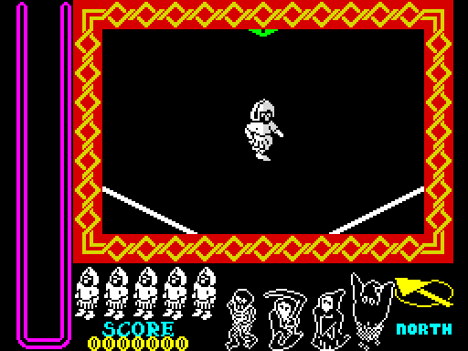
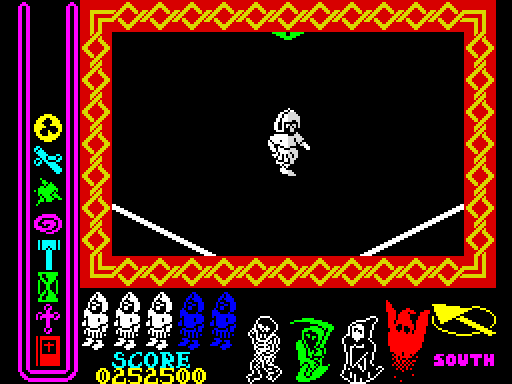
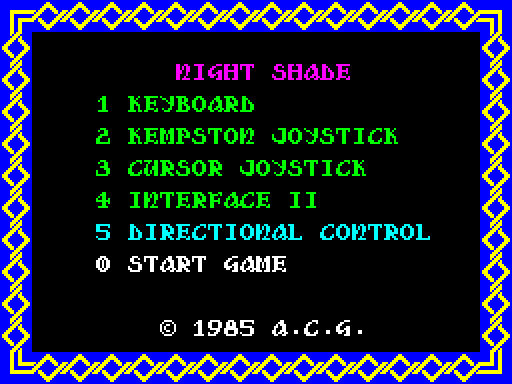

| Nightshade | The panel |
The play area is only the middle of the screen, 22 characters by 14, in its frame; the game buffers that part alone (BUFFER) and prints everything else straight onto the screen, once when a game starts and again only when something changes. Down the left, in a frame of its own, are the eleven places for what the knight carries; along the bottom his lives, the score, the four villains, the compass and the heading.
Here is the whole screen at the top of the first turn of a game, as the game drew it in SkoolKit's simulator (read from the screen, colours and all): NEW_GAME has drawn the frames, the heading over the score and the score, the compass and NORTH, five white knights for the lives (NEW_LIFE) and the villains, still about, as outlines (DRAW_VILLAINS).

The same, staged by calling the game's own routines on it: all eight kinds of thing carried (DRAW_CARRIED, 27 bytes into PICK_UP_THING for each place, then COLOUR_CARRIED for the colours); the villains of records 1 and 3 -- the hooded figure with the scythe and the ghost -- destroyed and DRAW_VILLAINS run again, which draws them as pictures in the colour of the object that kills them; two lives lost (the lives' part of NEW_LIFE: blue knights for the lost); the town turned round (PRINT_HEADING: SOUTH, in magenta); and 252500 added to the score (ADD_SCORE). The play area is the first turn's.

A villain still about is drawn from its sprite's first standing picture -- 108, 104, 100 and 96 -- as the mask byte of each pair less the image byte, which comes out as its outline, in white; a dead one as the image bytes, its picture, in colour (DRAW_VILLAINS). The carried things are coloured every turn: an object in the colour its villain is drawn in once dead, an antibody by its kind; an object whose villain is within five cells flashes through the antibodies' colours instead, the game's hint (COLOUR_CARRIED).
PRINT_BORDER draws the border round the whole screen for the menu and for the screen after a game, in the pieces of the play area's frame; here round the menu, as the game shows it at the first pass of the menu's loop (MENU).

The panel is printed a character at a time by the text printer (PRINT_CHAR), each set with FONT_BASE pointed at its own characters, and each character eight bytes, the top row first. Printed here by the game's PRINT_CODE, put together as the game puts them, in white; the game colours them as it prints (PRINT_CHAR_COLOURED).
PANEL_CHARS, 5 characters: the frame round the carried things, printed by DRAW_PANEL_FRAME in bright magenta: 0 the top of an upright, 1 an upright, 2 the left-hand bottom corner, 3 a length of the bar along the bottom and 4 the right-hand corner; here the top of an upright over two lengths of it, and the foot as the game prints it, 2, 3, 3, 4.
BORDER_CHARS, 20 characters: the pieces of the frame round the play area (DRAW_PLAY_FRAME, yellow on red) and of the border round the menu and the screen after a game (PRINT_BORDER, bright yellow on blue), four to a piece two characters square as FRAME_PIECES arranges them; here its six pieces: the corners, top left, top right, bottom left and bottom right, then a length of the top or the bottom and a length of a side.
ICONS, 36 characters: the carried things, four characters each, two over two (DRAW_CARRIED, 27 bytes into PICK_UP_THING): first the blank of an empty place, then things 1-4, the objects (the book, the cross, the hourglass, the hammer), and 5-8, the four kinds of antibody.
PANEL_ICONS, 24 characters: the compass, stored as its two rows of four and printed as two blocks of two by two by PRINT_COMPASS; the heading, four characters for each view, north and south (PRINT_HEADING); and a life, two by four (PRINT_LIFE_ICON).
None of these characters is found in Knight Lore's, Alien 8's or Pentagram's snapshots but one plain bar of the border's (searched): the panel is Nightshade's own. Compare Alien 8's panel, drawn from sprites.